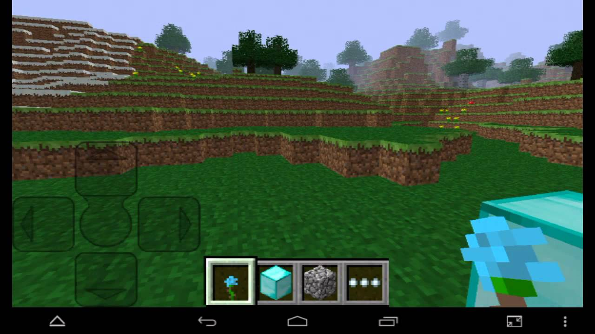

Birch
Home
Acacia
The Nether
Oak
Dark Oak
Birch Wood
Birch wood is found in forrests and has a yellowish white color to it
Its wood or somein idk
Birch wood was added to mnecraft bedrock in the first update along with spruce wood
A screenshot of 0.1.0 is shown below
